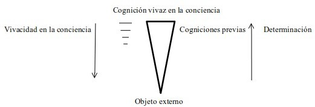

2 El carácter temporal de la mente y la aproximación a lo real en el proceso lógico de investigación
Introducción: una primera aproximación desde el análisis de la proposición
Inicialmente, Peirce aborda la cuestión estrictamente desde un análisis de tipo lógico, ya que su principal interés reside en desentrañar la estructura de las proposiciones sintéticas. En primer lugar, como se afirma en Sobre una nueva lista de categorías (EP 1 [1868], 1-10), debe destacarse que existen conceptos elementales involucrados en cualquier proposición, y que a través de éstos el entendimiento reduce la diversidad de las impresiones de la sensación a una unidad. Este procedimiento de reducción consiste en un ejercicio de abstracción o “prescisión” (prescision), que comprende una serie de pasos que permiten progresar desde el mero acto de reconocimiento de algo presente en general, sin ningún tipo de connotación, hacia sucesivas determinaciones o discriminaciones atribuidas a ese algo.
Peirce señala que el concepto de “algo presente en general”, o “ello” (it), usualmente ha sido expresado en filosofía por el término “sustancia”.1 Dado que el entendimiento reduce las impresiones a una unidad al establecer una conexión entre un predicado y un sujeto a través del concepto de ser cuando funciona como cópula, tal reducción se expresa en una proposición que afirma que algo “efectivamente es”, o bien que ese algo “sería” de determinada manera. Estas alternativas atienden a la circunstancia de que no puede haber una proposición cuyo predicado sea totalmente indeterminado, mientras que un sujeto puede ser algo actual o potencial. Por tales motivos, Peirce concibe este proceso de abstracción como una serie de pasos que comprenden una gradación de conceptos elementales que conducen del ser a la sustancia.
Esta aproximación al estudio de la proposición supone el trabajo realizado previamente en Sobre comprensión y extensión en lógica (W2 [1867], 70-86). En este breve ensayo, Peirce inicialmente compendia la falta de univocidad entre las distinciones conceptuales utilizadas a la hora de discriminar los factores involucrados en la significación de los términos que conforman una proposición.
A partir de esta revisión, Peirce decide adoptar la distinción sugerida por W. Hamilton, y distinguir entre “profundidad” (depth), concebida como todos aquellos caracteres o atributos que puedan predicarse sobre algo, y “amplitud” (breadth), para aludir a todas aquellas cosas sobre las que un término puede ser predicable (W2 [1867], 26; W2 [1867], 74).2 Ambos aspectos resultan cuantificables, ya que respecto a la profundidad, aunque se alude a cualidades, es posible determinar el número exacto de atributos que un término sugiere (Nöth 2012, 141). Por tal motivo, ambos factores se conciben como cantidades lógicas (logical quantities). Además, esta caracterización de los aspectos involucrados en la significación de los términos manifiesta que una proposición solamente puede estar conformada por signos generales, o símbolos (W2 [1867], 2; EP 1 [1868], 7-8).
Ahora bien, siguiendo a Kant, Peirce señala que entre ambas cantidades existe una relación inversamente proporcional. Es decir, a medida que aumenta la profundidad, cabe esperar una correlativa disminución de la amplitud, y viceversa (W2 [1867], 76). Por ejemplo, Peirce anota en su Cuaderno de lógica que el término “inglés” puede predicarse de un número mayor de individuos que “inglés malhumorado”, ya que esta segunda expresión aumenta el número de atributos o de determinaciones en cuestión (W2 [1867], 6). Este ejemplo muestra nítidamente que la profundidad de una expresión determina su amplitud. Como indica Liszka (1996, 124), la determinación de los objetos de los que una expresión sea predicable es posible solamente una vez que se conocen cuáles son los atributos a los que se alude con ella. Por tal motivo, una de las condiciones formales para que una expresión sea un signo es que posea una cuota de amplitud y profundidad.
Esta relación percibida entre ambas cantidades llevó a lógicos anteriores a presumir la posibilidad de discriminar una tercera cantidad lógica que varíe en función de ellas.3 Peirce afirmará la existencia de esa tercera cantidad lógica, y la denominará información. Este nuevo esquema de tres cantidades lógicas interrelacionadas condujo a Peirce a reformular las definiciones de amplitud y profundidad.4. Asumiendo que la relación entre ambas cantidades lógicas incide sobre una tercera, la información, se vuelve necesario entonces remitirse al suministro de información disponible al momento en que la proposición es formulada. Como indica (Nöth 2012, 140), esta característica de la noción de información en Peirce le imprime un carácter pragmático desde su misma raíz.
En lo que sigue, trataré de mostrar cómo este análisis de los términos de la proposición conduce a Peirce a una caracterización de la mente y del conocimiento como un proceso que se despliega en el tiempo, y que permite explicar así la posibilidad del aumento del conocimiento, concebido como un proceso de autocontrol ejercido sobre el flujo de pensamientos en sus determinaciones desde estadios previos hacia los posteriores.
La aproximación a lo real como un aumento del contenido de información que portan los símbolos
De hecho, la formulación de una proposición supone la capacidad previa de reconocer ciertos atributos en aquello actualmente presente ante la conciencia que justifique su inclusión en una clase. Evidentemente, esta capacidad de reconocimiento, como Peirce afirmará explícitamente en Cuestiones acerca de ciertas facultades atribuidas al hombre, debe reposar sobre cogniciones previas (EP 1, [1868], 25-27). La misma idea se encuentra ya esbozada un año antes, en su Cuaderno de Lógica: “La predicación de un concepto está virtualmente contenida en su representación previa” (W2 [1867], 9).
Por lo tanto, define como “amplitud informada” (informed breadth) de un término a todas aquellas cosas de las que el término sea predicable con buenas razones, dado un supuesto estado de información disponible. Del mismo modo, define la “profundidad informada” (informed depth) como todos aquellos caracteres o atributos que sean predicables de algo con buenas razones, dado un supuesto estado de información disponible (W2 [1867], 79).
Para caracterizar la relación entre las tres cantidades lógicas, Peirce propone la siguiente fórmula (W2 [1867], 83):
Profundidad x Amplitud = Información
Salta a la vista que esta fórmula es análoga a la utilizada en geometría para calcular el área de un rectángulo.5 De este modo, mientras se asuma que el estado de información disponible permanece constante, modificar una proposición aumentando su profundidad conlleva necesariamente una disminución en su amplitud, y del mismo modo, un eventual incremento en la amplitud implica necesariamente una correlativa disminución de su profundidad; de lo contrario, el estado de información disponible tiene que verse modificado. Lo mismo ocurre con el área de un rectángulo; ante la condición de que el área debe permanecer constante, un incremento en la longitud de su base implica necesariamente una correlativa disminución en su altura, y viceversa.
Entonces, esta fórmula implica que un eventual incremento en el estado de información disponible se produce cuando una proposición “S es P” conlleva un aumento en la profundidad del término S sin una disminución en su amplitud, y un aumento en la amplitud del término P sin una merma en su profundidad (W2 [1867], 9; W2 [1867], 83).
Según (Nöth 2012, 142), la cantidad de información disponible que expresa un símbolo, o en otras palabras, su profundidad y amplitud informadas, emerge como una parcela en un espacio semántico continuo entre dos extremos imaginarios que operan como los límites de lo representable. Para Peirce, en uno de estos extremos, la información poseída no permite representación alguna sobre cuestiones de hecho, ya que se limita a un listado de términos, donde cada uno de ellos reúne un conjunto de cualidades determinadas. En el otro extremo, la información poseída sería de un grado tal que equivaldría a una intuición absoluta de todo lo que existe, donde “las cosas que conociéramos serían las substancias mismas, y las cualidades que conociéramos serían las formas concretas mismas” (W2 [1867], 79). En estos casos límites, estrictamente hablando no se satisfacen las condiciones para hablar de representación, ya que en el primer caso se prescinde de una referencia a algo externo, y en el segundo, la representación y su referencia se superponen al punto de volverse indistinguibles. Además, recordando lo afirmado por (Liszka 1996, 124), se estaría violando en esos casos una de las condiciones formales para todo signo, la de que posea una cuota tanto de amplitud como de profundidad.
En Cuestiones sobre la realidad (W2 [1868], 162-187), su borrador para los artículos de la Cognition Series, Peirce ilustra esta situación aludiendo a la imagen de un triángulo invertido. La longitud de la línea horizontal superior (la base del triángulo invertido) representa la vivacidad que posee una cognición en la conciencia, y el objeto externo es representado por la punta inferior del triángulo, un punto que no posee longitud, ya que el objeto se sitúa fuera de la conciencia. Cada línea horizontal paralela a la base que pueda trazarse entre la base y el punto inferior representa una cognición del objeto, menos vivaz ante la conciencia a medida que se encuentra más próxima al punto sin longitud que representa al objeto externo. Además, cada una de estas cogniciones está determinada por la inmediatamente inferior, y determina a su vez a la inmediatamente superior (W2 [1868], 178).

Como indica Fisch (1986, 185-87), durante este período de la filosofía de Peirce es destacable la influencia de Chauncey Wright, ferviente seguidor de J.S. Mill. Wright sostenía, en palabras de Peirce, una teoría metafísica “cognicionista” que comprendía las siguientes tesis: 1) “ser” es sinónimo de “cognoscible”, 2) lo “real” es cognoscible en algún grado, 3) toda cognición es un signo, por lo que no existen las intuiciones, y 4) la cognición emerge de un proceso en donde no hay una cognición primera. En este sentido, para Peirce, quien supone que existe una “primera cognición” es víctima de un sofisma similar a la paradoja de Aquiles y la tortuga (W2 [1868], 178-179). Como señala Moore (2007, 428), este tipo de paradojas emergen al suponer falsamente que una cantidad continua está conformada por partes discretas.
Dado que toda sensación es absolutamente simple e inanalizable, un todo sin partes, en última instancia resulta incognoscible en cuanto tal, pues al tratar de pensar sobre ella, la sensación ha pasado; entonces, estrictamente hablando, las cogniciones o representaciones emergen al establecerse una relación entre estos puntos no analizables, inmediatos. Entonces, la irrupción de una nueva experiencia nunca es algo instantáneo, sino que es un acontecimiento que ocupa tiempo y se realiza en un proceso continuo.6 Por tal motivo, el valor intelectual de una sensación reside en la posibilidad de conectarse con otras posteriores en la representación. O, en otras palabras, en que las posteriores puedan volver sobre las anteriores para interpretarlas (EP 1 [1868], 38-42).
Como observa Moore (2007, 428), en estos textos Peirce recurre en realidad a un argumento de tipo trascendental: para una concepción lógica de la mente, tiene que presuponerse que la sucesión temporal de ideas es un continuo. De lo contrario, si cada idea o cognición se concibiera como una entidad discreta, no podría explicarse cómo puede causar o determinar a una próxima en el tiempo (W3 [1873], 69-70).
Por lo tanto, la intención de Peirce al remarcar que la amplitud y profundidad informadas de los términos se sitúan en algún lugar de un continuo entre estos extremos imaginarios es proveer una imagen que dé cuenta del hecho de que la información que expresan los distintos tipos de expresiones (positivas, negativas, universales y particulares) para una mente puede aumentar paulatinamente a través del razonamiento. O, para decirlo de otro modo, intenta sentar las bases de una teoría de la cognición que explique cómo es posible que razonando a partir de signos que sean capaces de representar en alguna medida a diferentes colecciones de objetos puedan obtenerse paulatinamente representaciones más confiables acerca de esos objetos. En Lecciones para una lógica práctica, la lógica es definida como un método para investigar la verdad, provisto de reglas que permitan estimar el valor de los argumentos determinando qué es lícito inferir a partir de un determinado estado de hechos (W2 [1869], 351). Más adelante, en Fundamentos de la validez de las leyes de la lógica (EP 1 [1868], 78), afirmará que la pregunta sobre la posibilidad de los juicios sintéticos es el candado de la puerta de la filosofía.
Como indica Nöth (2012, 147), esto permite explicar por qué un juicio analítico no resulta informativo. Afirmaciones como “Las mujeres son seres humanos adultos de sexo femenino” no resultan interesantes dado que el predicado simplemente explicita caracteres que ya están supuestos en la definición del término sujeto de la proposición. Se trata de un conocimiento puramente verbal que resulta, en todo caso, un prerrequisito para valerse de un sistema de signos. Por otro lado, como indica De Tienne (2005, 159), una proposición aunque fuera sintética podría resultar no informativa para un intérprete que ya esté familiarizado con su contenido. En otras palabras, dada la cantidad de información disponible, aquello que la proposición expresa no tiene que ser banal.
La temporalidad de la mente como condición para las inferencias ampliativas y una aproximación a lo real
Entonces, para Peirce, nos situamos en todo momento en un intermedio entre estos estados extremos imaginarios porque un signo nunca puede ser idéntico a la cosa significada, y tampoco puede ser idéntico a una cognición anterior, aunque esté en gran medida determinado por ella. Debe recordarse que para Peirce la conciencia resulta de un proceso que acontece en el tiempo, y que emerge de la suma total de relaciones que se establecen, a modo de síntesis, entre el caudal de impresiones generado por excitaciones nerviosas de las que no se tiene conciencia (EP 1 [1868], 11-18). En este sentido, como indica Bellucci (2018, 84) el proceso de investigación consiste en un entrelazamiento entre razonamiento y observación, asumiendo el carácter netamente inferencial de la observación.
La capacidad de critica lógica que posee la mente presupone que sus ideas actuales están determinadas, o son un producto, de ideas previas. Para que esto sea posible, los elementos del pensamiento deben estar presentes, o desplegarse, durante instantes o intervalos en un tiempo concebido de forma continua. Así, cada instante considerado en sí mismo resulta un todo simple e inanalizable, por lo que el pensamiento es posible en la medida en que establece relaciones sobre un flujo continuo de instantes de un grado de inmediatez tal que resultan inasibles considerados en sí mismos. Es decir, la mente tiene ante sí un proceso constituido por partes que existen en instantes diferentes, por lo que el acto de conciencia implica necesariamente una duración:
“Ningún pensamiento, sin importar qué tan simple sea, está en algún instante presente de forma completa en la mente, sino que es algo que vivimos y experimentamos del mismo modo que los eventos de un día. Y así como las experiencias de un día se construyen a partir de experiencias de intervalos más cortos de tiempo, cualquier pensamiento se construye a partir de otros pensamientos, que a su vez se construyen a partir de otros, y así indefinidamente. Probablemente haya algún mínimo intervalo de tiempo durante el cual, en algún sentido, sólo pueda existir un pensamiento indivisible, pero como actualmente no tenemos noticia de ese hecho, debemos contentarnos a nosotros mismos con la concepción más simple de una continuidad indefinida en la conciencia” (W3 [1873], 74).
Estrictamente hablando, un pensamiento previo no “cesa”, ya que pervive algo de ese pensamiento anterior en el pensamiento actual que ha sido determinado por aquel. Así, como indican Hookway (1992, 33-34) y Bellucci (2018, 89) toda acción mental es inferencial, ya que cada ligera modificación producida en un instante ejerce un efecto en el lapso que sigue, y este efecto de determinación sobre las ideas posteriores tiene que poder reducirse, para Peirce, a las formas del razonamiento válido.
Desde esta perspectiva, la tarea de la lógica reside en describir el proceso de investigación que se caracteriza por ejercer algún tipo de control sobre este proceso temporal de cambio de ideas, siendo así una mente crítica capaz de percibir cómo una idea es determinada por un conjunto de otras presentes a la conciencia con anterioridad.
Como afirma Peirce en Sobre la clasificación natural de los argumentos, un razonamiento deductivo del tipo:
Todo \(M\) es \(P\) Todo \(S\) es \(M\)
\(\therefore\) Todo \(S\) es \(P\)
se limita a afirmar, por un lado, que el término que aparece como sujeto en la premisa mayor y es eliminado en la conclusión posee una amplitud que incluye al término que opera como sujeto de la premisa menor, y que a su vez aparece como el término sujeto en la conclusión; por otro, afirma que el término que aparece como predicado en la premisa menor y es eliminado en la conclusión posee una profundidad que incluye al término predicado de la premisa mayor, término que aparece como predicado en la conclusión (W2, [1867], 27). En este caso, evidentemente, aunque la inferencia discurra en un lapso de tiempo y en ese sentido puede decirse legítimamente que la conclusión a la que se arriba posteriormente está determinada por las premisas consideradas en un momento previo (Bellucci 2018, 79-82), no agrega información nueva a la ya contenida en las premisas.
En cambio, la inducción y la hipótesis constituyen formas de inferencia probable, que aunque puedan tener un margen de error relativamente alto al inicio, irían fortaleciéndose progresivamente a medida que se establezcan premisas cada vez más seguras (W2, [1867], 44). En otras palabras, a medida que se posea una cantidad mayor de información en un lapso de tiempo mayor, este tipo de inferencias mejora su performance (EP 1 [1868], 77).
En el caso de la inducción se trata de un argumento que supone que una colección completa de objetos posee los caracteres que son comunes de una serie de casos perteneciente a dicha colección, tomados al azar como muestra (W2, [1867], 48). De este modo, aumenta la información creída por un incremento de la profundidad del término sujeto en la conclusión, que refiere a la colección, sin que se vea disminuida su amplitud. Además, aunque estrictamente hablando las premisas sólo aseveren que se sabe del término que aparece como predicado en la conclusión que es predicable de determinados elementos de una muestra, la inferencia permite aumentar su amplitud al enlazarlo con la colección considerada como un todo (W2, [1867], 84-85). En Algunas consecuencias de cuatro incapacidades, Peirce afirma, en un tono más cercano al utilizado en Una nueva lista de categorías, que la inducción es una especie de reducción de la multiplicidad a la unidad mediante la sustitución de una serie de muchos sujetos por uno solo que los abarque a éstos y a un número indefinido de otros (EP 1 [1868], 32-33). Podría esquematizarse de la siguiente manera:
\(S'\), \(S''\), \(S'''\), son tomados al azar, en tanto miembros de la clase \(M\). \(S'\), \(S''\), \(S'''\), poseen la propiedad \(P\);
\(\therefore\) Todo \(M\) probablemente posee la propiedad \(P\)
Para ilustrar esta situación, Peirce propone como ejemplo el sucesivo recuento del número de letras diferentes que aparecen en una serie de libros escritos en inglés. Como resultado de las observaciones en siete ejemplares, se obtiene que el porcentaje de ciertas letras (“e”, “t”, “a” y “s”) es relativamente constante. Entonces, se infiere, a partir del conocimiento obtenido de las muestras consideradas, que todo escrito en inglés de cierta extensión presentará la misma distribución, aproximadamente.
En cambio, la hipótesis es un tipo de inferencia que supone que cierto atributo que implica necesariamente un cierto número de otros, puede predicarse de cualquier objeto que posea esos atributos implicados por el primero. Aquí la inferencia procede como si se conocieran todos los caracteres requeridos para la determinación de cierta clase o tipo de objetos. De esta manera, se incrementa, aunque de forma potencial, la profundidad del término sujeto de la conclusión, y tentativamente, la amplitud del término predicado (W2, [1867], 85). La función de este tipo de inferencia es sustituir una serie de predicados que no formen una unidad por un sólo predicado (o un número reducido) que los abarque a todos. Por tanto, al igual que la inducción, también representa una reducción de una multiplicidad a una unidad (EP 1 [1868], 32-33). El procedimiento podría esquematizarse así:
Todo \(M\) posee los atributos \(P', P'', P'''\) \(S\) posee los atributos es \(P', P'', P'''\), etc.;
\(\therefore\) \(S\) probablemente pertenece a la clase \(M\)
Para ejemplificar ese procedimiento Peirce modifica la situación estipulada para ilustrar la inferencia inductiva. Ahora, se parte del análisis de una porción de un texto escrito en código. Al constatar que el código cuenta con 26 caracteres, y que cuatro de ellos aparecen en una cierta proporción destacable, se estipula que podrían ser substituidos por las letras “e”, “t”, “a” y “s”. Si a partir de esta suposición es factible realizar otras substituciones en otros caracteres para que los fragmentos tengan sentido en inglés, es lícito inferir que con una gran probabilidad se trate de un código para escribir en inglés.
Ambos tipos de inferencia presentan un aire de familia con el silogismo. En el caso de la inducción, si se toma la conclusión del razonamiento inductivo como la premisa mayor, y la proposición que afirma que tales objetos son tomados al azar de una clase como premisa menor, la premisa restante del razonamiento inductivo se seguirá de ellas como la conclusión de un razonamiento deductivo. Respecto a la hipótesis, si la conclusión de la inferencia es dispuesta como la premisa menor de un razonamiento deductivo junto a la proposición que afirma que todos los miembros de una clase poseen una serie de atributos, la premisa restante de la inferencia hipotética se sigue como la conclusión de un razonamiento deductivo (Bellucci 2018, 31-36). Esto conduce a Peirce a afirmar que toda forma de inferencia válida responde a una sola forma general (EP 1 [1868], 37).
Sin embargo, dado que la inducción y la hipótesis son razonamientos ampliativos, la cantidad de información que se posee en un momento dado resulta de una serie de inducciones e hipótesis que reposan a su vez sobre cogniciones previas (EP 1 [1868], 52). Entonces, puede decirse que este proceso continuo de cadenas inferenciales ampliativas permite, de forma paulatina y siendo capaz de autocorregirse, calibrar nuestras representaciones sobre lo real (Reese 1961, 710), entendiendo por dicha noción el conjunto de información que en el largo plazo resultaría de la cadena de inferencias que ha ido incrementando de forma sistemática la amplitud y profundidad informadas que un signo expresa. De hecho, para Peirce la noción de realidad no puede ser independiente del razonamiento, ya que solamente por su intermedio es posible distinguir entre lo meramente concebido, lo imaginado, y lo creído (W2 [1868], 162, 170).
Referencias
Aunque Peirce no refiera a listas anteriores de categorías, como indica (Fisch 1986, 263), tiene en mente al escribir este trabajo, además de Categorías de Aristóteles, los trabajos de Kant y Hegel.↩︎
En el último período de su filosofía, Peirce abandonará esta terminología y optará finalmente por los términos denotación y significación (Nöth 2012, 140).↩︎
Peirce destaca los intentos previos, aunque inacabados, del arzobispo Thomson y de W.D. Wilson (W2 [1867], 78).↩︎
En su Cuaderno de lógica (W2 [1867], 2-3), Peirce señala que una descripción de los factores involucrados en la significación de los términos de una proposición que se limite a señalar meramente la extensión y la intensión de los términos involucrados acarrea la dificultad de no poder dar cuenta de la probabilidad de una inferencia de ser sintética.↩︎
Para calcular el área de un rectángulo debe multiplicarse la longitud de su base por la de su altura.↩︎
En este sentido, Zalamea (2001, 61) indica que el concepto de continuo de Peirce es “inextensible”, al no estar compuesto de puntos. Considerado como actualidades, los puntos desaparecen y son reemplazados por “vecindades” donde el continuo fluye.↩︎
Contra Descartes, Peirce sostiene que la autoconciencia solamente es posible como el resultado de inferencias previas durante el proceso de adquisición del lenguaje, a partir del testimonio de otros sobre nosotros mismos (EP 1 [1868], 19-20). Dado que la actividad de pensar discurre en el tiempo, y todo pensamiento es interpretado por un nuevo pensamiento (EP 1 [1868], 24), nosotros mismos tal y como somos en un determinado momento, en el que pensamos, aparecemos como un signo (EP 1 [1868], 38). En otras palabras, en todo momento poseemos una teoría sobre nosotros mismos (EP 1 [1868], 41), elaborada a partir de los signos que hemos aprendido en el marco de una comunidad de hablantes.↩︎
Esta página es distribuida por la Universidad de Navarra y el GEP https://www.unav.es/gep/